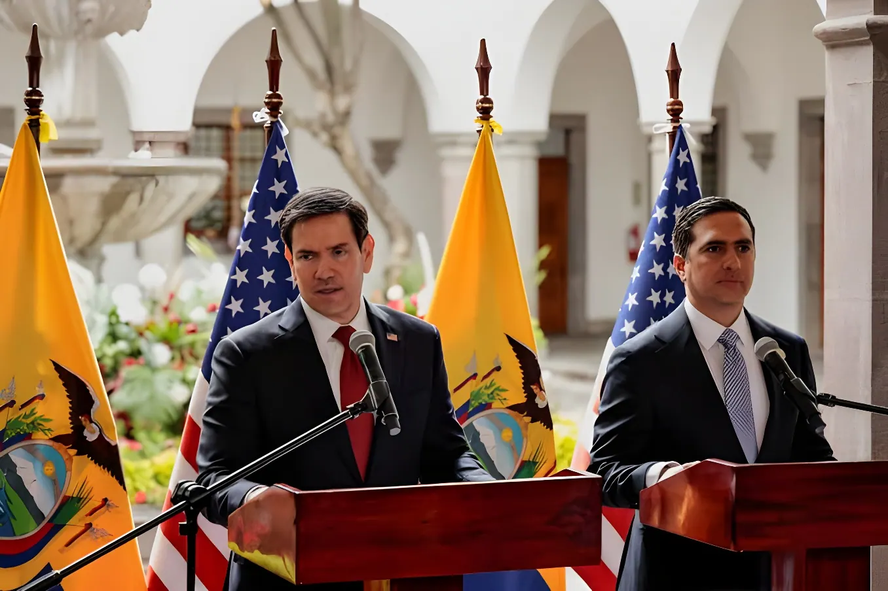

Deuxième étape d'une tournée latino-américaine consacrée à la sécurité, la visite du secrétaire d'État américain à Quito le 9 septembre 2026 a confirmé l'ampleur de l'alliance sécuritaire entre Washington et le gouvernement de Daniel Noboa : nouvelle désignation d'un gang comme organisation terroriste, opérations militaires conjointes dans le Pacifique et durcissement annoncé des règles d'extradition.
Après une première étape en Colombie, où il a rencontré le président élu conservateur Abelardo de la Espriella, Marco Rubio a atterri mercredi 9 septembre 2026 à Quito, deuxième halte d'une tournée qui doit s'achever le lendemain au Pérou. Ce déplacement s'inscrit dans une stratégie plus large de consolidation des alliances avec les dirigeants de droite d'Amérique latine, proches de la ligne portée par l'administration de Donald Trump.
Longtemps épargné par la violence liée au narcotrafic, l'Équateur est devenu en quelques années l'un des pays les plus dangereux d'Amérique du Sud et un point de transit majeur de la cocaïne à destination des États-Unis, de l'Europe et de l'Asie. Depuis son arrivée au pouvoir, Daniel Noboa a fait de la lutte contre le crime organisé une priorité, sans parvenir jusqu'ici à faire réellement reculer la violence.
Depuis Quito, Marco Rubio a annoncé que le gang équatorien Los Tiguerones serait désormais classé « organisation terroriste étrangère » par Washington, ce qui lui interdit tout accès au système financier américain ainsi que toute transaction ou soutien en sa faveur. Les États-Unis avaient déjà appliqué cette désignation à d'autres gangs équatoriens, ainsi qu'au Tren de Aragua au Venezuela et au cartel de Sinaloa au Mexique.
Washington modifie sa stratégie antidrogue et intègre des frappes militaires contre des navires soupçonnés de transporter de la drogue dans les Caraïbes et le Pacifique oriental.
Selon le département américain de la Défense, ces frappes ont fait plus de 200 morts, suscitant de vives critiques de défenseurs des droits humains.
Washington et Quito mènent des opérations conjointes dans le Pacifique équatorien : six embarcations de pêche soupçonnées de servir la logistique des trafiquants sont coulées en deux semaines.
Dernière frappe en date contre une embarcation, revendiquée par les autorités équatoriennes et américaines.
Marco Rubio atterrit à Quito, rencontre Daniel Noboa et annonce la désignation de Los Tiguerones comme organisation terroriste.
Les discussions entre Marco Rubio et Daniel Noboa ont porté sur trois axes principaux : un durcissement des règles d'extradition visant les trafiquants, l'approfondissement de la coopération militaire, ainsi que des investissements annoncés de grands groupes technologiques américains, dont Google, Palantir et SpaceX. Dans une tribune publiée avant son arrivée, le secrétaire d'État a affiché un soutien appuyé à l'action du président équatorien face aux organisations criminelles.
| Indicateur | Donnée |
|---|---|
| Embarcations coulées | 6 en deux semaines |
| Dernière frappe | 8 septembre 2026 |
| Zone d'opération | Pacifique équatorien |
| Bilan des frappes (≈ 1 an) | Plus de 200 morts |
La visite à Quito s'inscrit dans une séquence plus large : dès le lendemain, Marco Rubio devait se rendre au Pérou, où la présidente conservatrice Keiko Fujimori, entrée en fonction fin juillet 2026, a exprimé le souhait de voir son pays rejoindre le « Bouclier des Amériques », coalition régionale portée par Washington pour mutualiser le renseignement et la coopération judiciaire face au crime organisé.
Au-delà de la lutte antidrogue, cette tournée vise aussi à conforter l'influence américaine face à la présence croissante de la Chine, de la Russie et de l'Iran sur le continent — une dimension géopolitique que Marco Rubio associe régulièrement à ses déplacements en Amérique latine.
La visite de Marco Rubio illustre les deux faces de la stratégie américaine en Équateur : un soutien diplomatique et matériel sans réserve à un allié confronté à une criminalité organisée tentaculaire, mais aussi l'extension d'une méthode de plus en plus musclée — désignations terroristes, frappes létales, surveillance renforcée — dont l'efficacité contre la violence reste, pour l'heure, difficile à démontrer, et dont la légalité continue de diviser observateurs et défenseurs des droits humains.
Segunda etapa de una gira latinoamericana centrada en la seguridad, la visita del secretario de Estado estadounidense a Quito el 9 de septiembre de 2026 confirmó la amplitud de la alianza de seguridad entre Washington y el gobierno de Daniel Noboa: nueva designación de una banda como organización terrorista, operaciones militares conjuntas en el Pacífico y un endurecimiento anunciado de las reglas de extradición.
Tras una primera escala en Colombia, donde se reunió con el presidente electo conservador Abelardo de la Espriella, Marco Rubio aterrizó el miércoles 9 de septiembre de 2026 en Quito, segunda parada de una gira que debía concluir al día siguiente en Perú. Este desplazamiento se inscribe en una estrategia más amplia de consolidación de alianzas con los mandatarios de derecha de América Latina, próximos a la línea impulsada por la administración de Donald Trump.
Durante mucho tiempo al margen de la violencia asociada al narcotráfico, Ecuador se convirtió en pocos años en uno de los países más peligrosos de Sudamérica y en un punto de tránsito clave de la cocaína con destino a Estados Unidos, Europa y Asia. Desde que llegó al poder, Daniel Noboa ha hecho de la lucha contra el crimen organizado una prioridad, sin lograr hasta ahora reducir realmente la violencia.
Desde Quito, Marco Rubio anunció que la banda ecuatoriana Los Tiguerones sería a partir de ahora clasificada como «organización terrorista extranjera» por Washington, lo que le prohíbe cualquier acceso al sistema financiero estadounidense, así como toda transacción o apoyo en su favor. Estados Unidos ya había aplicado esta designación a otras bandas ecuatorianas, así como al Tren de Aragua en Venezuela y al cártel de Sinaloa en México.
Washington modifica su estrategia antidroga e incorpora ataques militares contra embarcaciones sospechosas de transportar droga en el Caribe y el Pacífico oriental.
Según el Departamento de Defensa de Estados Unidos, estos ataques han causado más de 200 muertos, generando fuertes críticas de defensores de derechos humanos.
Washington y Quito realizan operaciones conjuntas en el Pacífico ecuatoriano: seis embarcaciones pesqueras sospechosas de servir a la logística de los traficantes son hundidas en dos semanas.
Último ataque registrado contra una embarcación, reivindicado por las autoridades ecuatorianas y estadounidenses.
Marco Rubio aterriza en Quito, se reúne con Daniel Noboa y anuncia la designación de Los Tiguerones como organización terrorista.
Las conversaciones entre Marco Rubio y Daniel Noboa giraron en torno a tres ejes principales: un endurecimiento de las reglas de extradición dirigidas a los traficantes, una mayor cooperación militar, así como inversiones anunciadas por grandes empresas tecnológicas estadounidenses, entre ellas Google, Palantir y SpaceX. En un artículo de opinión publicado antes de su llegada, el secretario de Estado mostró un respaldo firme a la acción del presidente ecuatoriano frente a las organizaciones criminales.
| Indicador | Dato |
|---|---|
| Embarcaciones hundidas | 6 en dos semanas |
| Último ataque | 8 de septiembre de 2026 |
| Zona de operaciones | Pacífico ecuatoriano |
| Balance de ataques (≈ 1 año) | Más de 200 muertos |
La visita a Quito se inscribe en una secuencia más amplia: al día siguiente, Marco Rubio debía viajar a Perú, donde la presidenta conservadora Keiko Fujimori, que asumió el cargo a fines de julio de 2026, expresó el deseo de que su país se sume al «Escudo de las Américas», coalición regional impulsada por Washington para compartir inteligencia y cooperación judicial frente al crimen organizado.
Más allá de la lucha antidroga, esta gira también busca reforzar la influencia estadounidense frente a la presencia creciente de China, Rusia e Irán en el continente, una dimensión geopolítica que Marco Rubio asocia regularmente a sus viajes por América Latina.
La visita de Marco Rubio ilustra las dos caras de la estrategia estadounidense en Ecuador: un respaldo diplomático y material sin reservas a un aliado enfrentado a una criminalidad organizada extendida, pero también la ampliación de un método cada vez más contundente —designaciones terroristas, ataques letales, mayor vigilancia— cuya eficacia contra la violencia sigue, por ahora, siendo difícil de demostrar, y cuya legalidad continúa dividiendo a observadores y defensores de derechos humanos.